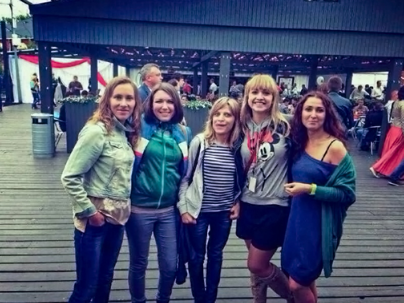
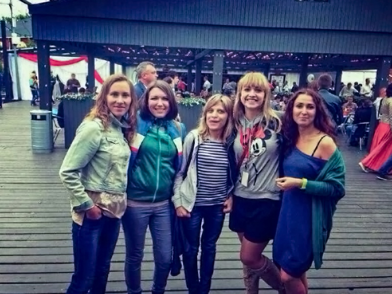

Human Resources Assistant
Europlan Leasing CompanyJuly 2012 – December 2012
Saint-Petersburg, Russia
Europlan is a car leasing company that finances the purchase of cars on lease for legal entities and individuals.
Europlan's regional network includes 83 offices throughout the Russian Federation. The company needed a high-quality HR selection of qualified and polite specialists for the remote contact center who are ready to help with resolving any issues regardless of the location of the client.
Since the geography of the company is quite extensive, the number of employees hired per day could reach more than 10 people.
At the same time, Eroplan also has a high turnover rate among sales managers. In addition to the voluminous recruitment process, it was necessary to ensure a large number of layoffs of employees. The company lacked human resources to process documents for newly hired and dismissed personnel.
As a decision, I was invited to this company as an HR Department Assistant.
Proficient in:
-
HR Document Management;
-
Personal Management;
-
ERP Systems Literacy.
Professional Experience
My tasks included meeting new employees and preparing and checking their documents for official employment in the Europlan leasing company. Then, during the first working day, I carried out the adaptation of five to ten new employees at their workplaces. This included providing access to internal confidential Customer Relationship Management (CRM) and financial reporting systems.
On certain days of the week, I held a meeting of 3-5 quitting employees and provided registration with verification of their documents.
After my successful adaptation period, I have been given the responsibility of conducting an initial selection of candidates' resumes for vacant positions in Europlan. Based on the results of my selection, seven sales managers were hired. They accounted for 11% of all sales.
Main Tasks and Responsibilities
-
Selection of candidates' resumes.
-
Soft adaptation of new employees.
-
Extremely accurate filling of forms and questionnaires.
-
Maintaining highly confidential and sensitive information.
-
Using an HRMS (Human Resource Management System).
-
Preparation and verification of personnel documentation.
I Wll Tell You About Myself
I always act according to a well-thought-out plan. Before making a final decision, I carefully analyze the information, consider every detail, and weigh the pros and cons.
I am convinced that I have to work at the highest level or not deal with the problem at all, so in my professional field, I prefer to be a respected expert, to know every detail and be able to answer any question.
I don’t pursue close personal contact in my working space, and I can come across in a situation as a cold, calculating, and emotion-devoid person. I often find it difficult to express my emotions, and I don’t like to openly demonstrate my feelings.
I value friendly relations with those whom I know well and whom I trust. In communication, I show a sense of tact, always correct and diplomatic.
Similar Experience
 

Business Competence Center Administrator
Ulmart.ru Online RetailerJanuary 2013 – October 2013
Saint-Petersburg, Russia
I worked for 2 years at the headquarters of the largest Russian online company, whose turnover amounted to more than $1 billion, according to Forbes in 2013. I started my career with this company as an Assistant in a Training Center for employees. Then I got promoted to the Business Competence Center (BCC) Administrator position. After a year of work at the BCC, I was promoted to the Project Office Administrator position.
Ulmart's representative offices were located in more than 240 cities in Russia. The vehicle fleet consisted of 300 vehicles of varying tonnage. The company's assortment was represented by more than 120 thousand products, and the total assortment amounted to more than 12 million products.
The corporate culture of Ulmart, built by the methods of the Business Competence Center, where I was hired to work as an administrative assistant, was so insightful from the first day that working on Friday until 11 pm was a pleasant addiction.
This young energetic powerful company has set a very high bar for the conditions of self-realization, which I am still trying to find in all subsequent positions, but I have not found it yet.
Proficient in:
-
HR Document Management;
-
Personal Management;
-
Microsoft Office Excel;
-
ERP Systems Literacy;
-
Budget Coordination;
-
Performer Supporting;
-
Financial Reporting;
-
KPI Reporting.
Professional Experience
The main area of responsibility of the Assistant position was the technical implementation of administrative decisions of the Training Center.
Every morning, I prepared the place where training sessions for new employees were held. These were both offline training sessions and online conferences in dozens of regions of Russia.
I provided the administrative organization of hundreds of training participants and technically equipped the training placement for a successful online conference, using equipment and software from Polycom. I quickly and discreetly solved technical problems together with the Ulmart Technical Support Department, making 5-10 requests a day.
I also organized business trips for colleagues, kept a database of training participants, made a training schedule, filled out feedback forms, and sent equipment by courier delivery.
After half a year, I was promoted to the Administrator position. To my responsibilities were added the functions of management and coordination of contracts and accounts.
I described the KPI system, which began to be introduced in the company by top managers, for the administrative department, as well as a structural work plan, Gantt diagrams, the process of concluding contracts, and coordinating payment of invoices. I have created tools for monitoring the effectiveness of the Business Competence Center. At the same time, I made monthly plans and reports on the work activities of seven workers.
Main Tasks and Responsibilities
-
Design and delivery of communication materials in an employee support system during the implementation of Human Resources programs for the development of business competencies of the talent pool.
-
Partnership with regional operational stakeholders to monitor, escalate, or address inquiries/issues related to employee experience or change communication.
-
Collecting feedback on employee experience and assessing its impact on employee experience.
-
Soft adaptation and technical equipment of workplaces of new employees.
-
Audit and reporting of employees' business trips expenses.
-
Verification and consolidation reports of KPI.
How Do I Deal With Pressure or Stress?
I enjoy the pressure of a deadline and sometimes I do my best work under pressure.
I handle pressure really well and I stay calm during stressful situations. I think I work better under stress.
When it is stressful working, I think the most important thing is to prioritize my work and not get overcome (by feeling like you have too much to do).
I focused on the task at hand (on what I am doing now) to maintain the quality of my work.
I manage stress by doing yoga, having a good work-life balance, and maintaining good communication with my colleagues and with the people I work with.